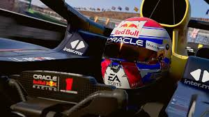

F1 24
F1 24 é o mais recente jogo de corrida da franquia, trazendo gráficos impressionantes, jogabilidade realista e todas as equipes, carros e circuitos da temporada oficial de Fórmula 1. Experimente a emoção das pistas e desafie seus limites!

Data de Lançamento: 31 de maio de 2024
Avaliação dos Jogadores
★ ★ ★ ★ ☆Recomenda√ß√£o de Idade:

Forza Horizon 5
Forza Horizon 5 é um jogo de corrida em mundo aberto desenvolvido pela Playground Games e publicado pela Xbox Game Studios. Ele é o quinto título da série Forza Horizon e se destaca por sua ambientação vibrante e expansiva no México.


Data de Lançamento: 9 de novembro de 2021
Avaliação dos jogadores
★ ★ ★ ★ ★Plataformas:

Clique para nos √≠cones para mais informa√ß√£o ↑
Recomendação de Idade: